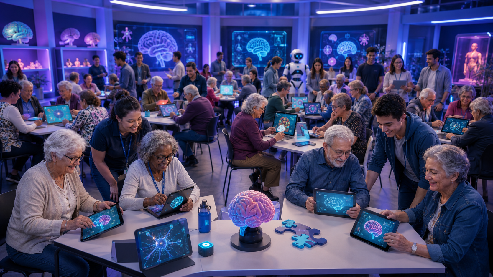
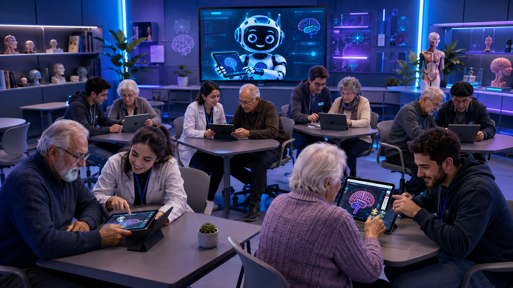
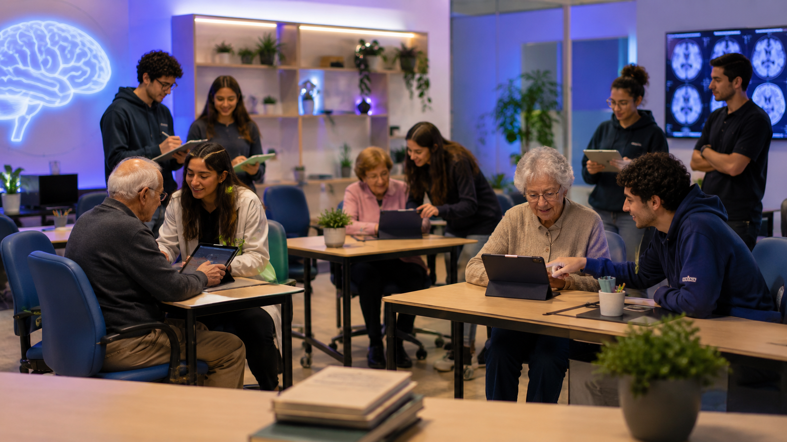
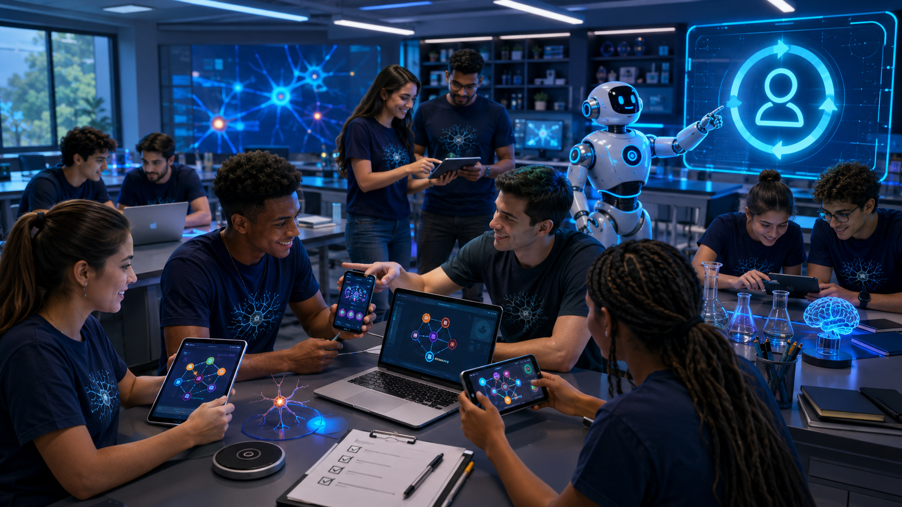
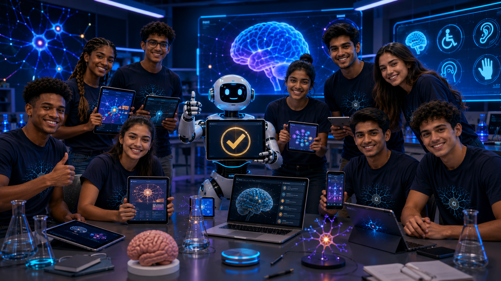
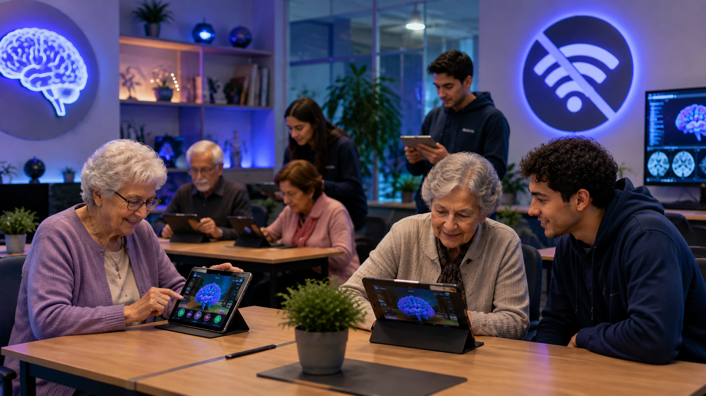
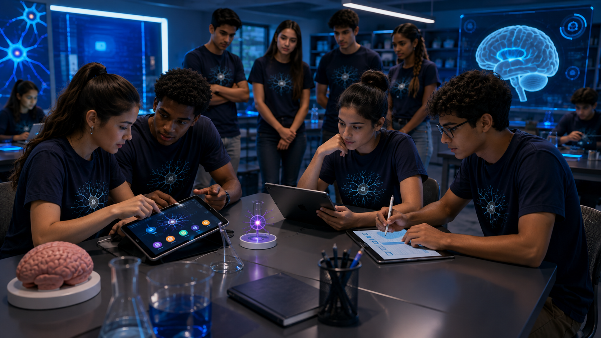
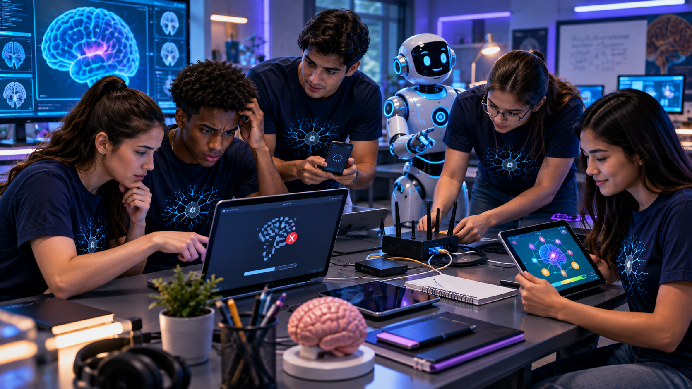
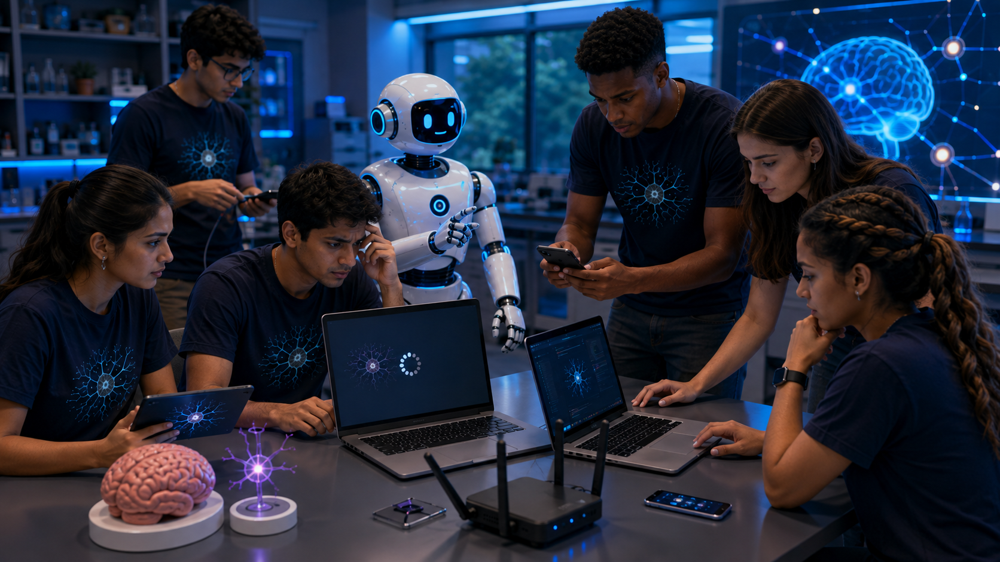

Plano de Contingência NeuroGames — UNATI
Decida, simule, teste e construa um plano capaz de responder a diferentes situações reais da atividade.
Iniciar missão📍 Sessão — Aula de hoje
As duas turmas trabalham juntas em uma simulação operacional: cenários de comparecimento, funções da equipe, acessibilidade, falhas técnicas, avaliação cruzada e Plano B acadêmico.
✅ Fazer chamada📁 Sessões anteriores — abrir/fechar
MISSÃO DA SEMANA 7 — PREPARAÇÃO
Preparação das pastas, organização dos NeuroGames e conferência prévia dos recursos. Esta missão permanece recolhida e só aparece quando o estudante abre a sessão.
Quatro cenários

Muitos inscritos comparecem: estações simultâneas e rodízio.

8–15 participantes: menos estações e atendimento individualizado.

1–7 participantes: experiência acompanhada, sem sobrecarregar o público.

Ativar avaliação técnica/por pares dos NeuroGames.
🎯 Construa seu Plano UNATI
Escolha as respostas. Não é necessário escrever.
🧪 Avaliação cruzada

Quando necessário, cada grupo testa um NeuroGame que não seja o próprio, sem explicação inicial dos autores. Verifique descoberta da tarefa, botões, legibilidade, correção do conteúdo, imagens, áudio, contraste, celular e barreiras para pessoas 60+.
♿ Acessibilidade e contingências técnicas



📄 Relatório científico do dia + Plano de Contingência
Registre somente o que realmente ocorreu. O relatório diferencia ensaio/simulação, participação UNATI e avaliação por pares.
1. Cenário observado
2. Funções e organização
3. Plano contingente detalhado
4. Observações reais do dia
5. Fotos do grupo e dos jogos
Inclua fotografias do grupo, dos jogos e das etapas da atividade. Adicione uma legenda para cada foto.
6. Relatório científico
🏁 Missão concluída

Antes de encerrar, confirme: responsáveis definidos, estratégia para público alto/baixo, acessibilidade, funcionamento sem internet, falhas técnicas e plano para ausência de participantes.